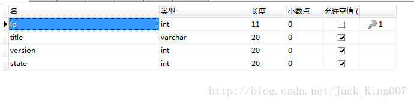
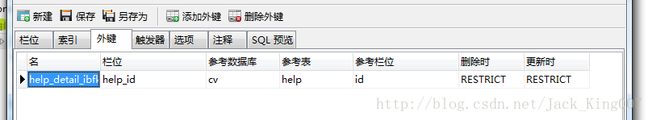
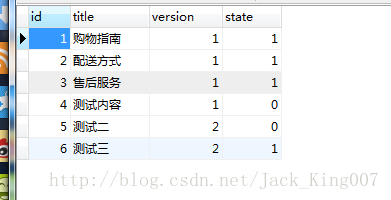

安卓服务器端开发之一数据库的准备
最近学校来一批人培训学校的，我看了Oracle数据库的培训，我在想尼玛这高级啊，直接对联企业级的开发，不过想了想平时自己开发怎么可能用那个数据库，学习成本又高。
我们的猪脚：mysql，和navicat界面化操作软件。
想起来我在学校老师叫我们的sql2005 哎 伤不起。
对于mysql 基本命令行还是需要自己了解 启动服务命令
开始->运行->cmd
停止：net stop mysql
启动：net start mysql
既然我都说了界面化软件 我就不多说命令了，后面的指令我会贴出来
安装mysql 网上都有教程
http://www.jb51.net/article/23876.htm
在安装的时候 记得把自己的密码记住，不然你会很悲催的
因为我准备的的教程是根据 一个网络商城 所写的 我把基本流程说一遍大家举一反三，基本能想出来
1数据库和服务器端
首先数据库的表必须是utf-8 跟服务器端编码格式是一样的，这样就不会造成乱码，我一开始用界面化软件建表，不能输入中文，这尼玛很坑爹 有木有，无奈之下 用命令行吧
先创建一个数据库 名字叫cv 和一个表
create database if not exists test; use test; create table help_id( id int primary key auto_increment, help_id int(20), title varchar(20), content varchar(255), state int(20) )default charset=utf8;然后自己在界面化软件看看是否创建成功
以次类推 创建help表

其实help_id要加入一个外键 大家可以在界面话软件中添加

再添加一些内容 help_id表

help表

好啦，数据库就创建成功了，然后就开始第二章了 服务器端月数据库的连接了